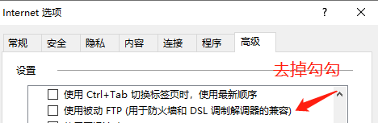

1 重装系统
安装系统不区分windows和linux，方式都是一样的
1.1 u盘启动盘制作
1.1.1 方式一
百度搜索微软官网工具

下载后，使用管理员身份运行
按步骤操作，其中下载镜像会比较耗时(好像只能下载win10)
制作启动盘完成后，就可以开始安装系统了

1.1.2 方式二


1.2 磁盘格式化
以 UEFI 启动的 Windows 磁盘必须是 GPT 格式，这里介绍如何在安装 Windows 期间将磁盘从 MBR 转换成 GPT。 在安装界面按
Shift+F10或Fn+Shift+F10进入cmd界面
输入
diskpart，进入管理界面输入
list disk查看所有的磁盘情况磁盘 ### 状态 大小 可用 Dyn Gpt -------- ------------- ------- ------- --- --- 磁盘 0 联机 119 GB 118 GB * 磁盘 1 联机 465 GB 1024 KB 磁盘 2 联机 28 GB 0 B *选择磁盘
select disk 1注意这里选择的是磁盘，而不是分区！不是通常所说的 C 盘/D 盘，而是一块 SSD，或一块机械硬盘。
执行
clean或clean all清除所有数据操作会清除选中磁盘中的所有数据，是所有数据，毫无保留！
清除结束，然后敲入
convert gpt命令完成转换操作结束之后输入
exit切换到 Windows 安装程序继续安装即可激活工具(点击下载)
1.3 主板启动热键
表中没有的机型尝试：ESC、下F8、9、F10、11、F2
| 台式机品牌 | 启动按键 | 笔记本品牌 | 启动按键 | 主板品牌 | 启动按键 |
|---|---|---|---|---|---|
| 联想 | F12 | 联想 | F12 | 华硕 | F8 |
| 惠普 | F12 | 戴尔 | F12 | 微星 | F11 |
| 华硕 | F8 | 华硕 | ESC | ||
| 戴尔 | ESC | 惠普 | F9 | ||
| 神舟 | F12 | 联想 | F12 |
有些联想电脑有NOVO键是一键恢复按键。在电脑的侧面有个很小的按钮，旁边有标号——“一个逆时针箭头”，作用是：关机状态下，按此按键可启动联想一键恢复系统或,BIOS，设置程序，或者进入启动菜单
2 软件安装
2.1 必装软件
微软
Office
办公软件是指可以进行文字处理、表格制作、幻灯片制作、图形图像处理、简单数据库的处理等方面工作的软件。 办公软件朝着操作简单化，功能细化等方向发展。链接下载(点我下载2016版)
删除软件
IOBit
IObit Uninstaller最新版是款功能高效的卸载工具。IObit Uninstaller官方版可轻松卸载并消除您电脑中的所有程序及文件，并在卸载后极速搜索注册表，找出残余信息并删除。并且IObit Uninstaller中还有一键移除工具列，批次移除和强制移除等功能。点我下载
chrome浏览器
百度搜索chrome浏览器，下载最新版本安装即可
可牛看图
一个功能强大且体积小巧的电脑看图工具，拥有丰富多样的图片浏览方式以及炫酷动感3D图片墙，支持批量图片上传、支持图片批量下载(官网下载，微云下载)
极速PDF阅读器
极速PDF阅读器(点我下载)是一款闪电般好用的PDF阅读器,体积小、启动速度快,十分轻巧且占用内存极少;提供单页、书本模式个性阅读,又有全屏、幻灯片等功能
布谷鸟配音(收费)
布谷鸟配音(点我下载)提供一站式智能配音的专业工具，输入文字转语音，一键将文字合成语音，真人情感配音
重启还原(免费版、专业版)
重启还原点我下载是一款不影响电脑性能，不占CPU使用率的还原工具，真正做到零内存占用，全程使用无感知，进入虚拟系统速度和普通系统速度相差无几
2.2 进阶软件
everything
Everything(点我下载)是voidtools开发的一款文件搜索工具，它体积小巧，界面简洁易用，快速建立索引，快速搜索，同时占用极低的系统资源，实时跟踪文件变化，并且还可以通过http或ftp形式分享搜索
Treesize
TreeSize Pro是一款优秀的磁盘空间管理工具。凭借其多样化的功能深受用户喜爱。通过该软件能够有效管理和清理磁盘空间，可视化磁盘空间的使用情况，详细分析目录级别，显示目录大小，包括所有子目录，直观呈现为饼图或条形状，所有信息一目了然(官网-需要自己找注册码、百度云下载-提取码: wqd1)
visio
Microsoft Visio是Windows 操作系统下运行的流程图软件，它现在是Microsoft Office软件的一个部分。
Visio可以制作的图表范围十分广泛，有些人利用Visio的强大绘图功能绘制地图、企业标志等，同时Visio支持将文件保存为svg、dwg等矢量图形通用格式，因此受到广泛欢迎。链接下载(点我下载2016版)
Gow
Gow(点我下载)是一个轻量级的Cygwin替代软件，它能做的事情是给Liunx软件提供一个Windows系统上的运行环境
安装后可以直接在windows上执行linux的大部分命令
Vmware
VMware Workstation Pro 点我下载是行业标准桌面 Hypervisor，使用它可在 Windows 或 Linux 桌面上运行 Windows、Linux 和 BSD 虚拟机。激活码全家桶，历史版本下载将上面的Name项内容，拼接到下面链接后面
https://download3.vmware.com/software/wkst/file/，复制到浏览器下载，例如:
https://download3.vmware.com/software/wkst/file/VMware-workstation-full-16.2.1-18811642.exe
typora
Typora(点我下载)是一款跨平台的Markdown编辑器软件,拥有Windows、macOS客户端
neatreader
Neat Reader(点我下载)率先在业界实现了主流平台的全面支持，让你无需再在各个软件间来回切换，真正实现了无拘无束，随时随地阅读体验，致力于打造一个满足现代需求的 EPUB/TXT 阅读器
PandaOCR
PandaOCR(普通版，专业版)是一款专注于 Windows 桌面端 OCR 文字识别的免费软件，支持多功能 OCR 识别、即时翻译和朗读等。而且识别和翻译等引擎都是可以自由调换的，界面简洁，使用起来也很方便 PandaOCR.Pro同样是免费使用，但它有一个激活专业版本状态，在未激活状态下您可以使用除高级功能外的全部功能，同时识别或翻译等功能可使用演示接口和百度API版接口，普通使用基本足够
2.3 IT软件
git
git官网下载
git config --global user.name "narutohyc" git config --global user.mail "1832044043@qq.com" # 配置远程仓库 将pub_key黏贴到git ssh-keygen -t rsa -C "1832044043@qq.com"如果需要指定的文件名，可以在
ssh-keygen -t rsa -C命令后输入自己的名字， 但是 ssh 命令默认只会读取id_rsa这个私钥文件，所以如果是其它的名字需要添加配置文件touch ~/.ssh/config vi ~/.ssh/config # 输入一下内容 Host www.github.com IdentityFile /root/.ssh/hyc_githubTortoiseGit(海龟 Git)是TortoiseSVN的 Git 版本，用于迁移 TortoiseSVN 到TortoiseGit，TortoiseGit 是一个 Git 版本控制客户端，作为 Microsoft Windows 的外壳扩展实现，配置教程
jdk
官网下载，主要配置参考
export JAVA_HOME=/usr/java/jdk1.8.0_241-amd64
export JRE_HOME=/usr/java/jdk1.8.0_241-amd64/jre
export PATH=$PATH:$JAVA_HOME/bin:$JRE_HOME/bin
export CLASSPATH=.:$CLASSPATH:$JAVA_HOME/lib:$JRE_HOME/lib
pycharm
官网下载，IDE全家桶激活码，验证码输入lookdiv.com
navicat
提供简便的管理方法，设计和操作MySQL、MariaDB、SQL Server、Oracle、PostgreSQL和SQLite的数据(点我下载-提取码: 6sp9)
Power Designer
是Sybase公司的CASE工具集，使用它可以方便地对管理信息系统进行分析设计，它几乎包括了数据库模型设计的全过程。利用PowerDesigner可以制作数据流程图、概念数据模型(ConceptualDataModel)、物理数据模型(PhysicalDataModel)，还可以为数据仓库制作结构模型，也能对团队设计模型进行控制。(官网-需要自己找注册码、百度云下载-提取码: n3xz)
finalshell
免费的国产的集 SSH 工具、服务器管理、远程桌面加速的良心软件，同时支持 Windows，macOS，Linux，它不单单是一个 SSH 工具，完整的说法应该叫一体化的的服务器，网络管理软件，在很大程度上可以免费替代 XShell，是国产中不多见的良心产品，具有免费海外服务器远程桌面加速，ssh 加速，双边 tcp 加速，内网穿透等特色功能(点我下载)
Officebox
完全免费的PDF工具/万能格式转换/识别工具/图片处理，多达60+个小工具，提供绿色版(点我下载)
Wolfram Mathematica
一款数学计算软件，具有编程语言、文本系统、计算引擎、图形系统等多种特色功能，并且还完美支持支持高性能计算，让用户科学计算的过程中，充分的发挥出自身的优势等。可以用于画函数图像(点我下载-提取码: 52qa)
3 Chrome扩展程序
没有插件的浏览器无异于没有灵魂！以下扩展程序的离线包微云下载
插件下载地址
- crx4chrome: 下载指定扩展id的crx文件
- extfans
- huajiakeji
- crxdown
- 应用商店
3.1 翻墙类
Astar VPN
Astar VPN- 适合所有人的免费且快速的 VPN
Ghelper
官网需要翻墙
3.2 脚本管理工具
3.2.1 扩展
油猴
Tampermonkey暴力猴
Violentmonkey
3.2.2 脚本下载与推荐
脚本下载地址
脚本推荐
- 百度网盘直接下载助手
- 网盘直链下载助手
- 解锁B站大会员番剧、B站视频解析下载；全网VIP视频免费破解去广告；全网音乐直接下载；油管、Facebook等国外视频解析下载；网盘搜索引擎破解无限下载等
- 破解VIP会员视频集合
3.3 下载类
Chrono下载管理器: 做Chrome浏览器中最好的下载管理器nternet Download Manager: 您可以使用Internet下载管理器下载Stream Recorder: 可以下载99%在线视频，包括直播流、m3u8流Fatkun图片批量下载: 可以下载当前标签或者是所有标签的图片，提供按分辨率、链接等筛选图片
3.4 效率类
书签管理: 在任何页面都可以通过书签关键字快速搜索打开书签,管理您的书签
书签地球助手: 一款很优秀好用的网页浏览器上的书签管理助手，帮助用户一键整理网页标签，自定义标签设置方法，同时还可以查询搜索历史记录
广告拦截
- AdGuard 广告拦截器是一款无与伦比的广告拦截扩展，用以对抗各式广告与弹窗。可以拦截 Facebook、YouTube 和其它所有网站的广告
- 广告终结者能清除网页上的所有广告：浮动广告，购物广告，恶意弹窗，跟踪代码。让你浏览网页更快更清爽
扩展管理器(Extension Manager): 一键管理所有扩展，快速开启/禁用、批量闪电管理，智能排序，右键卸载、锁定、选项配置，角标提醒，大小布局随心配。快捷、简单、安全
Simple Allow Copy: 简易复制
Reader View: 剥离按钮、背景图像等杂物，改变页面的文字大小、对比度和布局，以提高可读性
Diigo Web Collector - Capture and Annotate: 用来在网页上做笔记，高亮显示选中的文本，就像在本子上勾画重点一样(需要登录使用，免费版支持100个网页)
在线合并PDF: 快速免费合并PDF文件！
Diigo Web Collector: 像在本子上一样为网页做笔记
Docs Online Viewer: 直接在谷歌浏览器中在线查看任何文件
Instapaper: 是一款运行在chromr内核的能够即时保存网页的chrome网页离线阅读插件
Mate Translate: 是一款词典翻译类插件，可轻松翻译 103 种语言的单词、短语或文件。 功能包含 [全页翻译]: 只要单击鼠标，Mate 就会为您翻译整个网页！在任何页面上，只要使用上下文菜单中的“翻译此页面”功能，就可立即翻译为您想要的语言
Video Downloader professional: 是一款网页视频下载工具，下载前请先播放视频
FireShot: 不仅支持区域截图，还支持完整的长网页截图
Grammarly for Chrome: 国外最火的文字纠错工具，英语写作助手，帮助你在输出过程中找出英语单词拼写、语法、语调等问题，它为你提供具体的建议，帮助你提高英语写作水平
3.5 程序员类
Octotree - GitHub code treePostman InterceptorSourcegraphGitZip for githubJSON Viewer Pro
3.6 浏览器美化类
MONKNOW 新标签页 - 个性化面板Stylish-为任意网站自定义主题: 利用用户样式管理器Stylish来重新编辑网站的样式，可利用Stylish为许多网站安装主题和皮肤，也可创建自己的主题和皮肤
4 局域网ftp共享
FTP(File Transfer Protocol)是TCP/IP网络上两台计算机传送文件的协议，使得主机间可以共享文件 目前有很多软件都能实现这一功能，然而windows 8系统自带的IIS就可以帮助你搭建FTP服务器
打开
控制面板->程序->启用或关闭windows功能找到
Internet信息服务，并选中FTP服务、FTP扩展性和IIS管理控制台前的复选框，点击确定
打开
IIS管理器，在左栏的网站上点击右键，打开添加FTP站点win+r后输入inetmgr，即可打开IIS管理器开始配置，选择
无SSL
在电脑浏览器地址栏中输入
ftp://本机ip测试一下在启动你的FTP服务器时建议关闭防火墙
常见问题
本机可以访问，其他机子无法访问，可能是
防火墙问题或ftp服务权限问题方式一: 关闭防火墙

方式二(推荐): 允许FTP服务通过防火墙

关闭被动FTP
 将文件复制到ftp服务器出错，请检查是否有权限将文件放到该服务器上
win+r后输入inetmgr，打开IIS管理器，进入服务器管理器，单击右侧的[高级设置]选项，进入FTP高级设置对话框，在高级设置对话框中找到允许 UTF-8选项，单击下拉列，然后选择False选项，重启服务即可
{kind=link}